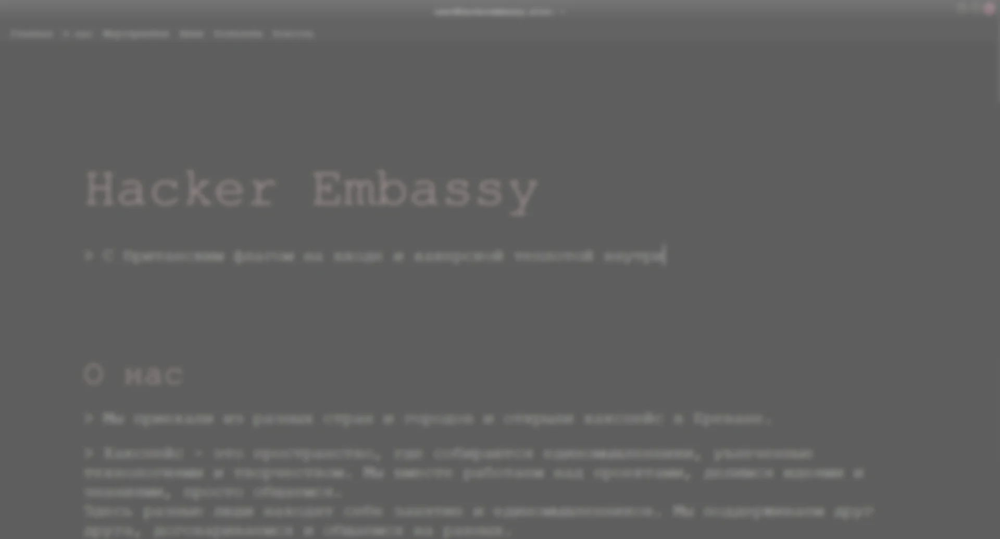

About me
üõ†Ô∏è An enthusiastic and highly motivated Software Developer interested in
both backend and frontend.
Experienced in all stages of the
development cycle for web projects from graphic design and features
development to deployment and mantaining of cloud server infrastructure.
üíª I am interested in development of web applications using
Asp.Net, Node.js, Express, MySQL and React.
I have both commercial and freelance work experience, including web projects listed below.
üíæ My experience areas range from personal blogs and landing pages to
data analytics, business intelligence, content management systems.
üßóüèª I would describe myself as flexible, responsible, and open-minded.
I'm able to be entirely self-sufficient, however I am enthusiastic about being a part of a team, learning from stronger team members and helping others to grow.
üìö Education
• Bachelor of Music: Performing Arts - 2019. Belarusian State Academy of Music, Minsk
• Bachelor of Computer Science: Computer Science and Software Engineering – 2024. Belarusian State University
of
Informatics and Radioelectronics, Minsk
Examples of my work
Official site of Belarussian State Chamber Orchestra.
https://belsco.net
The project features multiple types of content
(musicians pages, events, news, gallery, press, and more), a custom built
admin content management system where users can edit almost anything on the site
without any technical knowledge with the help of templates, powerful search, and text editing capabilities,
automatic upload image format conversion and web optimization.
The site supports five languages and automatic translation of any content.
It's optimized to work on both big and small screens. You could also install it as a mobile application.
The site uses Google and Yandex analytic solutions to measure a variety of helpful performance and SEO metrics.
It's designed in Adobe XD and Adobe Photoshop and implemented using Node.js, Express,
MySQL, Handlebars, Jest, Sass. From the DevOps side, it features a complete delivery pipeline from building and unit testing to server deployment.
Landing page for People`s Artist of Russia Evgeny Bushkov.
https://evgenybushkov.belsco.net/
This site was designed with the idea of smooth UI transitions (the next page is preloaded before the previous is closed) and motion as
a way to express dynamic nature of conducting and performing music.
It features multiple types of a content (events, gallery, blog and more), a custom built
admin content management system where user can edit almost anything on the site
without any technical knowledge using rich text editing capabilities,
automatic upload image format conversion and web optimization.
It has two languages support, dynamic gallery and integrated youtube playlist player.
It's optimized to work on both big and small screens.
The site uses Google and Yandex analytic solutions to measure a variety of helpful performance and SEO metrics.
It's designed in Adobe XD and Adobe Photoshop, and implemented using Node.js,
Express, MySQL, Handlebars, Barba.js.
Landing page for a fitness trainer Nik Kurdoyak.
https://trainedbynik.fit/
This site is designed in close cooperation with the client based on his ideas and layout and enhanced to convey a strong personality impression.
Its main task is to be a starting point for a potential client to start working with the fitness trainer, explore
his achievements, his trainee success stories, and learn more about his authored training program "No Way To Fail".
The site is also built to work on both big and small screens. It uses Google and Yandex analytic solutions to measure a variety of helpful performance and SEO metrics.
The site and all its assets are created using such tools as Adobe Photoshop, Adobe Illustrator, Node.js, Express, and Handlebars.
Landing page for Westphalia string quartet.
https://vip-kvartet.by/
This site is a simple single page to introduce customers to the string quartet they could order for their weddings, birthdays, and other events.
It features their history, repertoire, image and video gallery, and a custom-built admin page for convenient and easy editing of site content for their managers.
It's optimized to work on both big and small screens.
The site uses Google and Yandex analytic solutions to measure helpful performance and SEO metrics.
It's designed in Adobe XD and Adobe Photoshop and implemented using Node.js, Express, MySQL, and Handlebars.
Personal site of Raman Kamisarau - a concert pianist based in Switzerland.
https://ramankamisarau.com/
The client's request was to create a personal site within a short period that can handle different types of content (such as
biography, contacts, gallery images, news, upcoming and past events) with easy editing for a client without any technical knowledge.
To deliver it as soon as possible, the task was achieved with the help of Strapi (an open-source content management system) and implemented using React and Node.js.

Official site of Yerevan Hackerspace - a community for engineers and technical enthusiasts
https://hackerembassy.site/
Hackspace is a space where like-minded people who are passionate about technology and creativity gather.
They work on various technical projects together (not related to actual hacking, just in case), share ideas and knowledge.
This page is developed open-source, but I took the main role in UI redesign (Ubuntu console style) and most of the core features,
such as the literal console on the page which can communicate with the space's physical infrastructure through my API
(open door status, people present inside, etc.),
the framework for easter eggs and achievements, which is used by the community just for the fun of coding.
This page also can communicate through the console with my telegram bot, written specifically for this community
to make typical interactions (opening the door, checking who is inside, donations, monitoring funds, birthdays, 3d printer statuses, CCTV, and more)
easier for its members.